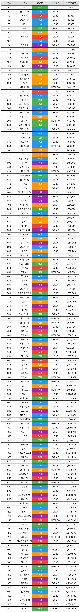

이런게 궁금할 사람이 있는지는 모르겠다만 AI 연습할겸 만들어봄
참고로 모더니아와 니힐리스타가 각각 7회로 1등
알트아이젠과 그레이브 디거가 각각 6회로 2등을 차지하셨슴미다 짞짞짞 ;
원본: https://gall.dcinside.com/mgallery/board/view/?id=gov&no=5345515
백업 시각:

이런게 궁금할 사람이 있는지는 모르겠다만 AI 연습할겸 만들어봄
참고로 모더니아와 니힐리스타가 각각 7회로 1등
알트아이젠과 그레이브 디거가 각각 6회로 2등을 차지하셨슴미다 짞짞짞 ;